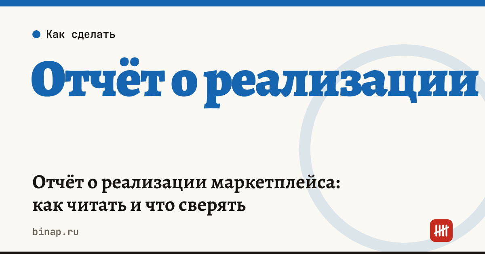

Отчёт о реализации маркетплейса: как читать и что сверять

Отчёт о реализации — главный документ продавца на маркетплейсе. По нему видно, сколько товара продано и возвращено, сколько удержала площадка и сколько денег она перечислила. По нему же считают налог. Но строк в нём сотни, и ошибки площадки или собственные просчёты легко пропустить. Ниже — как читать отчёт и что сверять каждый месяц.
Коротко
- Отчёт о реализации формирует площадка за период — обычно неделю или месяц — по агентской или комиссионной схеме.
- В нём три блока: продажи и возвраты, удержания площадки (комиссия, логистика, хранение, штрафы, реклама) и итог к перечислению.
- Сверяйте три вещи: продажи с остатками, удержания с тарифами и итог к выплате с деньгами на счёте.
- На УСН доход признают по дате поступления денег; на УСН «доходы» по позиции Минфина доход — вся сумма продаж, а не только перечисленный остаток.
- Ошибки в удержаниях оспаривают через поддержку площадки со ссылкой на номер строки отчёта.
Сроки, изменения и разборы для ИП и самозанятых — каждое утро в Telegram и MAX. Подпишитесь, чтобы не пропустить.
Из чего состоит отчёт
| Блок | Что в нём | Что проверить |
|---|---|---|
| Продажи | товары, количество, цена продажи покупателю | совпадает ли с вашими данными о заказах |
| Возвраты | возвращённые товары и суммы | вернулся ли товар на склад или пропал |
| Вознаграждение площадки | комиссия по категориям | ставка соответствует тарифу категории |
| Логистика | доставка до покупателя и обратно | нет ли повторов по одному заказу |
| Хранение, приёмка | платные услуги склада | соответствует ли объёму товара |
| Штрафы и удержания | нарушения, корректировки | есть ли основание и номер заказа |
| К перечислению | итог | пришла ли эта сумма на счёт |
Как сверять: пошагово
- Выгрузите отчёт за период из кабинета в Excel.
- Сверьте продажи: число проданных и возвращённых единиц по каждому артикулу с вашим учётом и остатками на складе площадки.
- Проверьте комиссию: отфильтруйте строки по категориям и сравните процент с тарифом площадки на дату продажи.
- Найдите повторы логистики: одна доставка на один заказ; если строк больше — это вопрос в поддержку.
- Разберите штрафы: у каждого должен быть номер заказа и основание. Новые правила по индексу ошибок на Ozon — в статье Штрафы Ozon для FBS с 19 ноября.
- Сверьте итог с банком: сумма «к перечислению» должна прийти на счёт. Если выплату задержали — что делать, разобрали в статье Wildberries задержал выплату.
Пример: что показывает сверка
Расчёт редакции на условных цифрах. За месяц продано товаров на 500 000 ₽.
| Строка | Сумма |
|---|---|
| Продажи покупателям | 500 000 ₽ |
| Комиссия площадки | −90 000 ₽ |
| Логистика | −55 000 ₽ |
| Хранение и приёмка | −12 000 ₽ |
| Штрафы | −3 000 ₽ |
| К перечислению | 340 000 ₽ |
Удержания — 160 000 ₽, или 32% продаж. Если в прошлом месяце было 28%, ищите, какая строка выросла: часто это логистика из-за возвратов или хранение медленного товара. Как удержания влияют на прибыль с каждой продажи — проверьте в калькуляторе юнит-экономики селлера.
Налог. На УСН «доходы» по позиции Минфина облагают всю сумму продаж — 500 000 ₽, а не 340 000 ₽ к перечислению; удержания площадки налог не уменьшают. На УСН «доходы минус расходы» удержания учитывают в расходах. Как настроить учёт — в статье Онлайн-бухгалтерия для селлера на УСН. Все материалы — в разделе Селлерам.
Частые вопросы
С какой суммы платить налог на УСН 6% — с продаж или с выплаты? По позиции Минфина — с полной суммы продаж покупателям, без вычета комиссии и логистики площадки.
Что делать, если в отчёте ошибка? Напишите в поддержку площадки с номером отчёта, строки и заказа, приложите расчёт. Сохраните переписку — она пригодится, если придётся спорить дальше.
Как часто сверять отчёт? Каждый раз, когда площадка его формирует: ошибки за один месяц разобрать легче, чем за полгода.